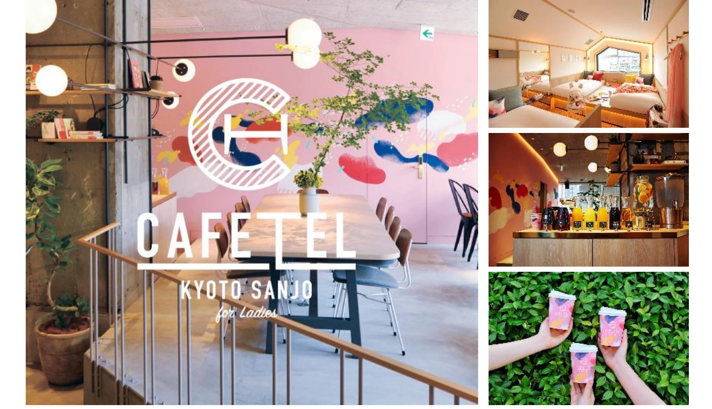

観光
CAFETEL 京都三条

PROJECT INFORMATION
京阪ステイズの「CAFETEL 京都三条」。ブランディング、企画・デザイン、アメニティ一式を担当しています。
01 / 背景とテーマ
輪郭を与える
京阪ステイズの「CAFETEL 京都三条」。ブランディング、企画・デザイン、アメニティ一式を担当しています。
02 / SCHEMAの担当範囲
全体を整える
SCHEMAの担当範囲は、ブランディング・企画、デザイン・アメニティ一式です。
03 / 取り組みの視点
枠組みをひらく
ブランドの考え方を、滞在中に手にするアメニティにも展開する。施設と身近な品物をつなぐデザインです。